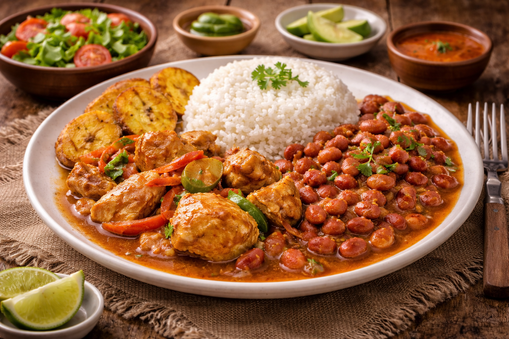

Main Page
Dominican Flag Recipe

Description
“La Bandera Dominicana” (The Dominican Flag) is the everyday traditional lunch of the Dominican
Republic. It’s called “the flag” because the plate typically represents the colors of the Dominican flag:
white rice, red beans, and meat (usually stewed chicken or beef). It’s commonly served with salad
and fried plantains on the side. This meal is simple, balanced, and full of flavor — a true staple in
Dominican households and the heart of daily home cooking.
Ingredients
For the rice:
- 2 cups white rice
- 2 ½ cups water
- 1 tablespoon oil
- 1 teaspoon salt
For the beans:
- 2 cups cooked red beans (or 1 can, drained)
- 1 small onion, chopped
- 1 green bell pepper, chopped
- 2 cloves garlic, minced
- 2 tablespoons tomato sauce
- 1 teaspoon oregano
- 1 tablespoon oil
- Salt to taste
- 1 cup water
For the chicken (or beef):
- 2 lbs chicken pieces (or beef chunks)
- 1 small onion, chopped
- 1 green bell pepper, chopped
- 3 cloves garlic, minced
- 2 tablespoons tomato sauce
- 1 teaspoon oregano
- Juice of 1 lime
- 2 tablespoons oil
- Salt to taste
- Black pepper to taste
- 1 cup water
Steps
Make the rice:
- Heat oil in a pot over medium heat.
- Add water and salt, and bring to a boil.
- Stir in the rice.
- Cook uncovered until most of the water evaporates.
- Stir, reduce heat to low, cover, and cook for about 15–20 minutes until fluffy.
Make the beans:
- Heat oil in a saucepan over medium heat.
- Sauté onion, bell pepper, and garlic until softened.
- Add tomato sauce and oregano, and cook for 1–2 minutes.
- Add beans and water, stir well.
- Simmer for about 10–15 minutes until slightly thickened. Adjust salt to taste.
Make the chicken (or beef):
- Season the meat with lime juice, garlic, oregano, salt, and pepper.
- Heat oil in a pot over medium heat.
- Brown the meat on all sides.
- Add onion, bell pepper, and tomato sauce. Stir and cook a few minutes.
- Add water, cover, and simmer until the meat is tender and the sauce thickens.
- Serve a plate with white rice, a portion of stewed beans over or beside the rice, and the stewed meat. Add salad and fried sweet plantains on the side if desired.
Main Page